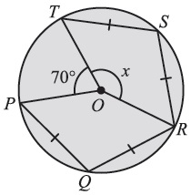
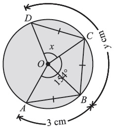
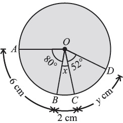
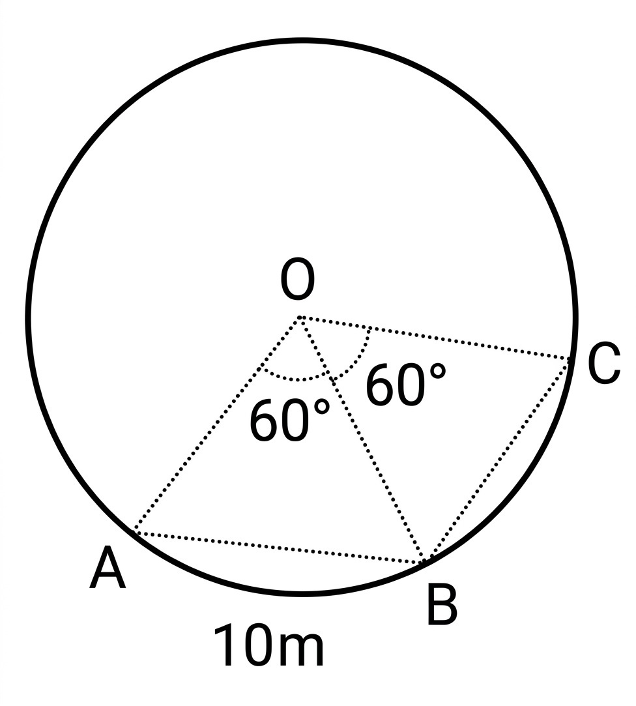
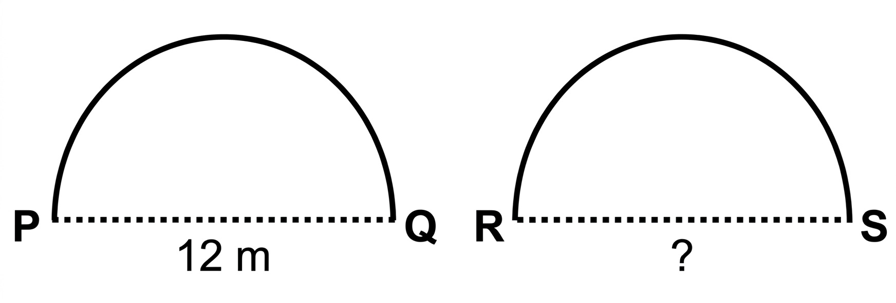
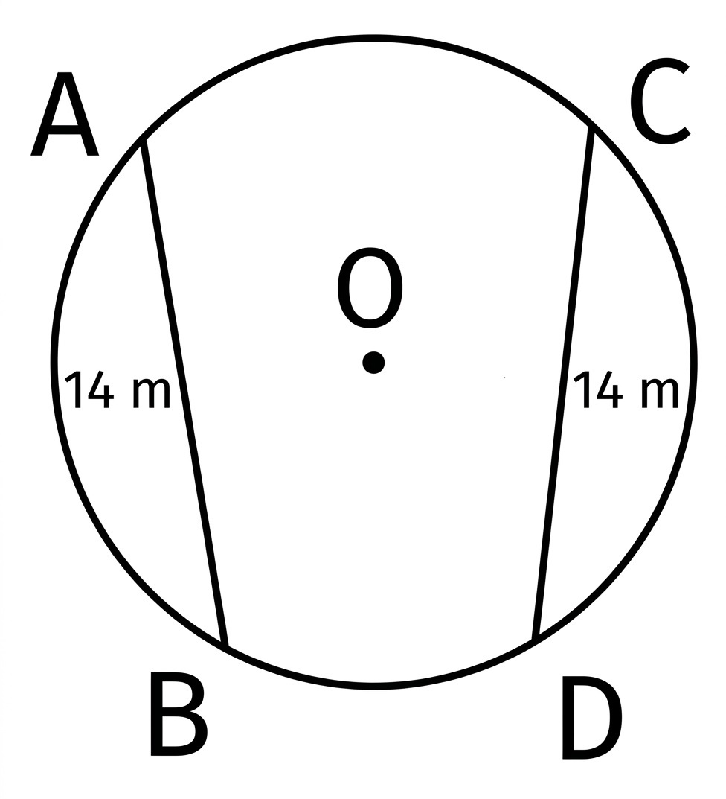
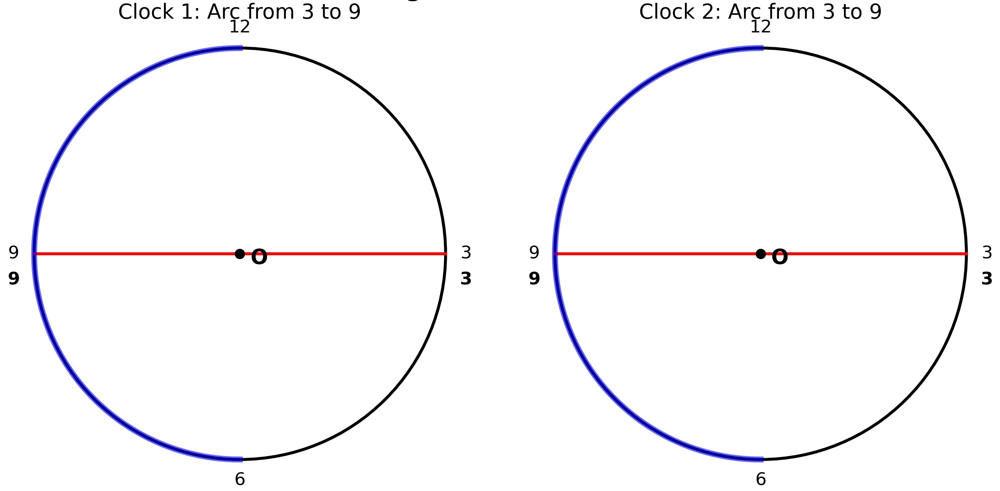

Prepared by Muhammad Tayyab, Subject Specialist Mathematics, Govt Christian High School Daska
📌 Based on National Curriculum 2023 / PECTAA Syllabus
📖 What's Inside: This exercise covers arcs, central angles, and congruence. Perfect for Punjab Boards exam preparation.
If the PDF does not load, click here to view it directly on Google Drive .
📚 Related Resources – Chapter 8: Chords and Arcs
Advertisement
Class 10 Math Chapter 8 Exercise 8.2 – Arcs and Central Angles: Complete Guide
Exercise 8.2 of Class 10 Mathematics focuses on the relationships between arcs, chords, and central angles. Building upon the foundational chord properties learned in Exercise 8.1, this exercise introduces the fundamental theorems connecting the lengths of arcs and chords to the angles they subtend at the centre of a circle.
What You Will Learn
By working through Exercise 8.2, students learn how to apply the theorems that equal chords subtend equal angles at the centre, and conversely, that equal central angles correspond to equal chords. You will also explore how congruent arcs in a circle (or congruent circles) have equal corresponding chords, and how to calculate unknown angles and arc lengths using these principles.
Topics Covered in This Exercise
- Equal Chords and Central Angles: Proving and applying the theorem that equal chords of a circle subtend equal angles at the centre.
- Equal Central Angles and Chords: Using the converse theorem that if central angles are equal, their corresponding chords are equal.
- Congruent Arcs: Understanding that if two arcs are congruent, their corresponding chords are equal in length.
- Congruent Chords and Arcs: Applying the theorem that equal chords have congruent corresponding arcs.
Why Exercise 8.2 Is Important
This exercise bridges the gap between linear measurements (chord lengths) and angular measurements (central angles). Board exams frequently test these theorems through numerical problems and geometric proofs. Mastering these concepts is crucial for solving complex circle geometry problems in later chapters.
Punjab Board Preparation
For students preparing for board exams under any of the 10 BISE Punjab boards, this exercise provides essential practice in applying circle theorems. Questions involving finding unknown angles (\(x\), \(y\)) and arc lengths are common in both short and long question sections.
PECTAA Syllabus Alignment
These solved notes are aligned with the Punjab Education & Curriculum Textbook Authority (PECTAA) syllabus, following the National Curriculum 2023 framework for Class 10 Mathematics. The question numbering, formulas, and terminology match the current Punjab textbook exactly.
Exam Tips for Arcs and Central Angles
- Always identify the central angles corresponding to the given chords or arcs.
- Remember that the sum of angles around the centre of a circle is \(360^{\circ}\).
- Use variables (like \(\theta\) or \(x\)) to represent equal angles when chords are equal.
- Check your answers by substituting back into the original equation.
Common Mistakes Students Make
- Confusing the measure of an arc (in degrees) with its length (in cm or m).
- Forgetting that equal chords subtend equal angles, not supplementary ones.
- Not recognizing when a central angle is a reflex angle (greater than \(180^{\circ}\)).
- Miscalculating the sum of angles around the centre.
Use the table of contents below to jump directly to any question, or scroll through the full solved exercise in order.
Given: \(mPQ = mQR = mRS = mST\) (chords are equal) and \(m\angle POT = 70^{\circ}\).
To find: Value of \(x\).
Reasoning: By theorem, equal chords subtend equal angles at the centre. Therefore, the central angles corresponding to these equal chords are also equal.
Let \(m\angle POQ = m\angle QOR = m\angle ROS = m\angle SOT = \theta\).
The sum of angles around the centre \(O\) is \(360^{\circ}\).
From the figure, \(x\) is the angle formed by two equal arcs (QR and RS), so \(x = 2\theta\):

Given: From the figure, \(mAB = mBC = mCD\). The combined angle \(m\angle AOC = 154^{\circ}\).
Calculation for \(x\): Equal chords subtend equal central angles. Therefore, \(m\angle AOB = m\angle BOC = m\angle COD = x\).
The total angle \(m\angle AOC\) is made up of \(\angle AOB\) and \(\angle BOC\):
For \(y\): By theorem, equal chords have equal arcs.

Given: \(mAB = mBD\), central angle for arc \(\widehat{AB} = 80^{\circ}\), \(m\angle BOC = x\), \(m\angle COD = 52^{\circ}\), \(m\widehat{AB} = 6\text{ cm}\), \(m\widehat{BC} = 2\text{ cm}\), \(m\widehat{CD} = y\text{ cm}\).
Calculation for \(x\): Since arcs \(\widehat{AB}\) and \(\widehat{BD}\) are equal, their central angles are equal. So:
For \(y\): Equal chords have equal corresponding arcs. So:

Given: Two congruent arcs, each subtending an angle of \(60^{\circ}\) at the centre. Length of one chord \(= 10\text{ m}\).
Reasoning: By theorem, congruent arcs of a circle have equal corresponding chords.
Hence, the length of the other chord is \(10\text{ m}\).

Given: \(m\widehat{PQ} = m\widehat{RS}\). Chord \(mPQ = 12\text{ m}\).
Reasoning: Arcs of equal length correspond to equal chords.
Hence, the straight-line distance (chord \(RS\)) is \(12\text{ m}\).

Given: Chords \(m\widehat{AB} = m\widehat{CD} = 14\text{ m}\).
Reasoning: By theorem, chords of equal length subtend equal (congruent) minor arcs.
Hence, the minor arcs subtended by these walkways are congruent (equal in measure).

Reasoning: On a clock, the numbers 3 and 9 are exactly opposite each other, meaning the string forms a diameter. The arc from 3 to 9 is a semicircle. Since the clocks are congruent circles (equal radii), their identical portions (semicircles) result in congruent arcs.
Yes, the arcs are congruent because they represent identical segments (semicircles) of identical circles.

📈 Key Concepts & Quick Revision
📐 Circle Geometry Theorems
- Equal Chords, Equal Angles: Equal chords of a circle (or congruent circles) subtend equal angles at the centre.
- Equal Angles, Equal Chords: If the angles subtended by two chords at the centre are equal, then the chords are equal.
- Congruent Arcs, Equal Chords: If two arcs of a circle (or congruent circles) are congruent, then their corresponding chords are equal.
- Equal Chords, Congruent Arcs: If two chords of a circle are equal, then their corresponding arcs are congruent.
- Sum of Central Angles: The sum of the measures of the central angles of a circle with no interior points in common is \(360^{\circ}\).
📝 Important MCQs for Practice
1. Equal chords of a circle subtend equal angles at the:
2. If two arcs of a circle are congruent, then their corresponding chords are:
3. The sum of the measures of central angles of a circle is:
🏆 Board Exam Tips & Strategy
- Always use variables to represent equal angles when chords are equal.
- Remember that the total angle around the centre is \(360^{\circ}\).
- Distinguish between the measure of an arc (in degrees) and its length (in cm/m).
- Practice drawing diagrams to visualize the relationship between chords, arcs, and central angles.
❓ Frequently Asked Questions
What is taught in Exercise 8.2 of Class 10 Math Chapter 8?
Exercise 8.2 covers the relationships between arcs, chords, and central angles. It includes problems on calculating unknown angles and arc lengths based on the theorems that equal chords subtend equal angles at the centre and congruent arcs have equal chords.
How many questions are there in Chapter 8 Exercise 8.2?
Exercise 8.2 contains 7 distinct problems involving the calculation of central angles, arc lengths, and the application of circle theorems.
What is the most important theorem in Exercise 8.2?
The most important theorem is: "Equal chords of a circle subtend equal angles at the centre." This theorem is the foundation for most of the problems in this exercise and allows us to set up equations to find unknown angles.
How do you find the sum of central angles?
The sum of the measures of the central angles of a circle with no interior points in common is always \(360^{\circ}\). This is a key concept for solving problems involving multiple angles around the centre.
Is this solution according to the PECTAA syllabus?
Yes, these solutions are prepared strictly according to the PECTAA / National Curriculum 2023 syllabus for Class 10 Mathematics.
Is this Exercise 8.2 solution valid for all Punjab Boards?
Yes, the content follows the unified Punjab textbook and is applicable to students of all 10 BISE Punjab boards.
Are solved PDF notes available for Exercise 8.2?
Yes, a complete solved PDF for Exercise 8.2 is embedded at the top of this page and is available to download for free.
Who prepared these Class 10 Math Chapter 8 notes?
These notes were prepared by Muhammad Tayyab, Subject Specialist Mathematics at Govt Christian High School Daska, for Hira Science Academy.